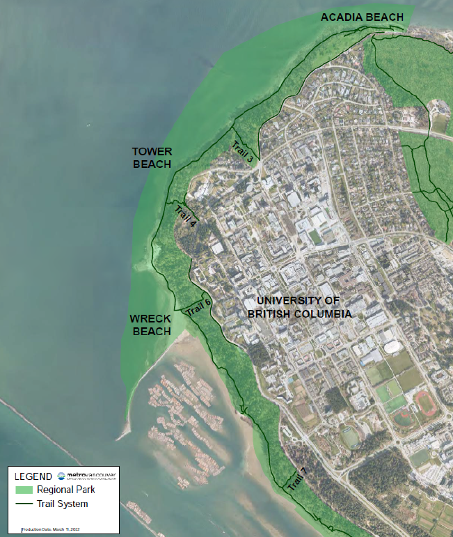
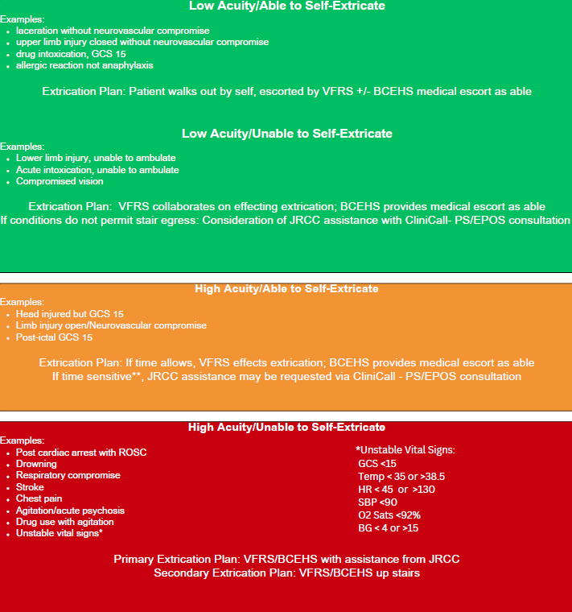

Wreck Beach Standard Operating Guideline
Purpose
This document serves to act as a guide for BCEHS Paramedics responding to emergencies within Wreck Beach, it has been developed in partnership with colleagues from the Vancouver Fire Rescue Service and the Royal Canadian Mounted Police. Wreck Beach, nestled within Metro Vancouver’s Pacific Spirit Regional Park, is celebrated for its beauty and social allure. Extending 7 kilometers along ancestral unceded Musqueam land, and wrapping around Vancouver’s Point Grey peninsula, it ranks among the world’s largest clothing-optional beaches. However, its popularity and remote location pose safety challenges. Despite its charm, the beach's isolation and increasing visitation create challenges, particularly in handling medical emergencies. Effective coordination among emergency responders, including the RCMP (UBC Detachment), Vancouver Fire Rescue Services (VFRS), BC Emergency Health Services (BCEHS), and the Canadian Coast Guard, is crucial in addressing these challenges. Time sensitive decision making is based on multiple factors and is often a nuanced decision balancing risks and benefits. Decisions on the urgency of extrication may include but are not limited to, patient factors, responder factors (ex. crew fatigue), mechanism of injury, medical condition, and environmental state. This does not lend itself well to a specific scoring system and is best discussed in consultation with the Paramedic Specialist desk and/or EPOS.
Scope
All paramedic and supervisor units responding to events at Wreck Beach.
Definitions
JRCC = Joint Rescue Coordination Centre EPOS = Emergency Physician Online Support
Policy
BC Emergency Health Services (BCEHS) is committed to providing safe and effective medical care and extrication for emergencies occurring within the unique geographical confines of Wreck Beach. Due to the area's isolation and the safety challenges posed by its remote location, the following policy mandates apply:
-
Inter-Agency Coordination: All responses must be conducted in close partnership and coordination with the Vancouver Fire Rescue Service (VFRS), the RCMP (UBC Detachment), and the Canadian Coast Guard to ensure a unified approach to patient care and scene safety.
-
Nuanced Decision-Making: Clinical decisions regarding the urgency and method of patient extrication must balance multiple risk factors, including patient medical condition, mechanism of injury, responder fatigue, and environmental states.
-
Mandatory Consultation: Because extrication decisions do not follow a fixed scoring system, paramedics are required to discuss the extrication plan and urgency in consultation with the Paramedic Specialist desk and/or Emergency Physician Online Support (EPOS).
-
Cultural and Geographic Awareness: Responders must acknowledge that operations take place on the ancestral unceded lands of the Musqueam people and within a unique social environment (clothing-optional) that requires professional conduct and situational awareness.
Procedure
Operational Specifics
- BCEHS – PICK UP WRECK BEACH KIT inside station 262 next to the vehicle bay entrance in locker 231 – (please call dispatch for padlock code).
- SWITCH TO CE-VAN 1 (Combined Event) on one of your portables to connect with Vancouver Fire (VFRS) to confirm ETA.
- Once connected, MUTUALLY DECIDE IF YOU ARE GOING TO WAIT for each other before heading down based on incident information, time of day and weather. If either agency is delayed, then head down to the beach instead of waiting.
- When 10-7 at scene, LEAVE VEHICLE KEYS on the floor inside the ambulance to allow VFRS to drive it over to Spanish Banks.
- VFRS, please remember to take the BASKET STRETCHER with you.
- BCEHS, please take the clam shell along with your Wreck Beach Kit and O2.
- PARK RANGERS activation, call 604-451-6610 (24hr Emergency). They know a lot about what goes on down at the beach and can provide excellent help should you need it (direction, crowd control, etc.).
- Should you need assistance from JRCC (Coast Guard – Hovercraft) for transport, you MUST call CliniCall (PS/EPOS) arrange for response. Do not assume that someone else will call on your behalf (e.g. park rangers, police, fire, UBC security, etc.).
- The Hovercraft will then take you to the “CONCESSION STAND” (or sometimes referred to as the Bath House) at Spanish Banks where your ambulance should be awaiting your arrival.
Special Considerations
All recommendations and assessments on scene by BCEHS paramedics must be relayed to CliniCall for consultation with the Paramedic Specialist and/or EPOS
Documentation Requirements
Complete ePCR unless no patient contact is made.
References
| Wreck Beach Map | MCI Guideline |
|---|---|
 |
 |
Revision History
| Version | Date | Changes | Author |
|---|---|---|---|
| 1.0 | 2025-12-01 | Initial version | Metro Ops |